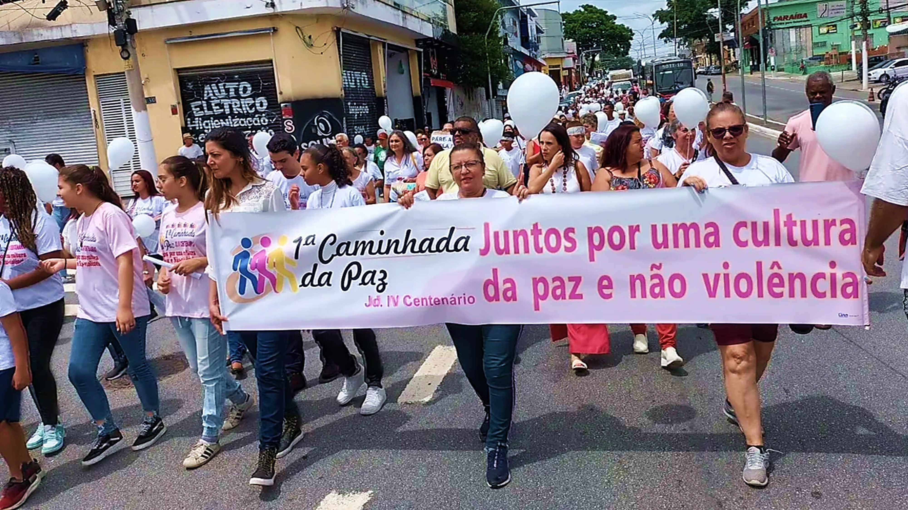
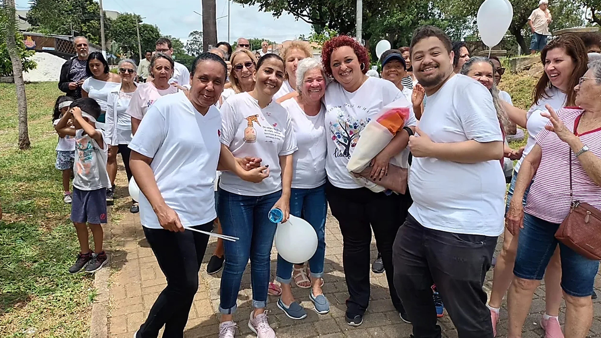
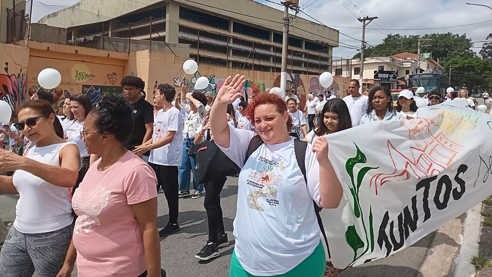

O encontro, que teve início no ano de 2023, surgiu através da necessidade de abordar a violência na região e promover uma convivência pacífica entre os moradores, contando com o apoio das religiões e lideranças comunitárias para enfrentar esse desafio pela paz. A partir da organização e reunião da comunidade do Jardim IV Centenário / Jardim Imperador e região, a ideia foi caminhar numa manhã de sábado para a promover a paz e valorizar a vida, dizendo “não a violência”.
As duas primeiras edições da Caminhada da Paz, sendo a primeira no dia 28 de Outubro de 2023, e a segunda edição no dia 28 de Setembro de 2024, seguiram um trajeto bastante parecido: Os presentes partiram da Praça Catas Altas, percorreram toda a Avenida Luis Pires de Minas, fazendo paradas estratégicas ao longo da avenida e também na Praça Miguel Ramos de Moura (Praça do Vinho) para intervenções artísticas e culturais, e também para algumas falas dos grupos presentes, tendo o seu encerramento na Praça Cataguarino.
Participam do encontro algumas organizações sociais da região, como o CCP Santa Úrsula, o CEC Itápolis e o Instituto Mater Dei, espaços religiosos de todos os segmentos, como a Paróquia São Paulo Apóstolo, a Igreja Batista e a Associação Kardecista Casa do Caminho Irmã Sheila, além da comunidade em geral, onde todos caminharam unidos em prol da paz, sem distinção de cor, religião, orientação sexual, idade ou sexo.
Durante toda a caminhada, são realizadas intervenções musicais, culturais e artísticas, realizadas pelos grupos presentes na caminhada, fazendo algumas paradas para a exposição de falas que reforçam a cultura da paz, da união e da não violência. Durante o trajeto, os participantes são envolvidos por músicas temáticas, apresentações de poesias, rodas de capoeira e coreografias, que contribuem para o ambiente animado e acolhedor.
Neste ano, o encontro terá um trajeto um pouco menor, mas a comunidade continua presente e no objetivo de cultivar a paz. O tema "Por uma cultura da paz e pela Ecologia Integral" traz a reflexão para os participantes da edição deste ano sobre a preservação do meio ambiente, que a natureza também deve ter a sua paz e sua beleza preservada, pelo bem do planeta todo, assim como a cultura da paz, que é benefício para todo o mundo.
 Você está convidado para participar deste encontro, que é de toda a comunidade. Nele, não existe a mulher ou o homem,
o preto ou o branco, o cristão ou o espírita, existem pessoas com um desejo em comum: dizer NÃO para a violência
e SIM para a paz no Jardim IV Centenário e toda a região.
VENHA! PARTICIPE CONOSCO!